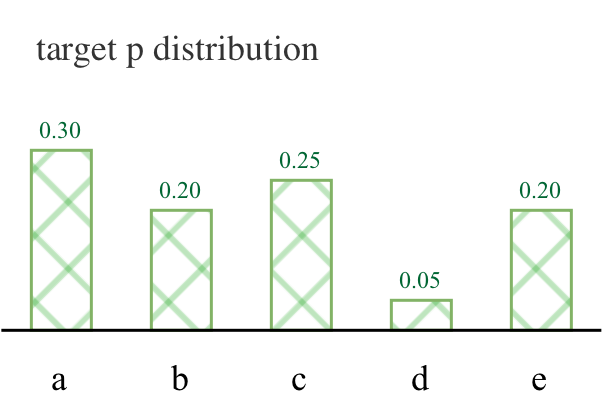
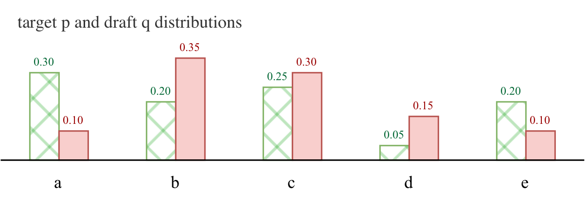
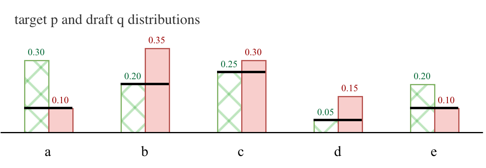
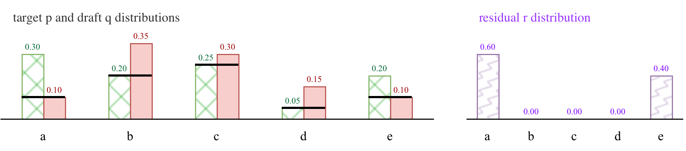
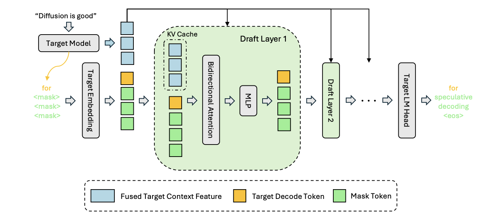
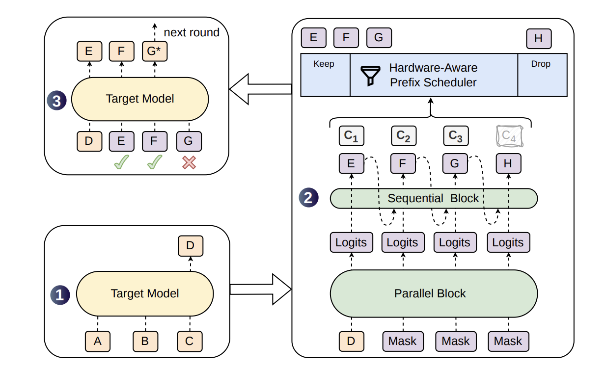

Speculative decoding is as close to a free lunch in LLM inference as you’re ever going to get. After all, it can speed up generation with no loss in quality! Consider this video of speculative decoding making OCR ~2x faster:
If you’re unfamiliar with speculative decoding, you’re probably wondering how this is possible! This guide is meant to help you understand the major themes and ideas in speculative decoding, when it is and isn’t useful. The goal is to bring you up to speed on the latest and greatest techniques, like dSpark.
To get there, I’m going to walk through the following major ideas:
- What is Speculative Decoding?
- Speculative Sampling
- Draft Models
- MTP
- MEDUSA, SpecInfer
- EAGLE 1 / 2 / 3 / 3.1
- dFlash
- dSpark
In addition, I have an appendix that goes deeper on concepts or introduce prerequisites:
A.1: Intuitions for Why Speculative Sampling is Lossless
What is Speculative Decoding?
Speculative decoding is a technique for speeding up LLM inference without losing quality. Normally, generating text with an LLM requires sampling one token at a time:
[figure 1]
This means you’re doing one forward pass per token. Speculative decoding allows you to “generate” multiple tokens per forward pass. The idea is that you use a cheap model to draft the next several tokens, and then accept or reject those draft tokens with the good model.
The big model is not generating these tokens, but verifying them! Using the big model as a verifier allows you to generate a full completion with fewer forward passes, because you can verify multiple tokens in one forward pass.
If we revisit the generation above:
[figure 2]
Speculative Sampling: One Weird Trick for Losslessness
But before I said that speculative decoding offers lossless speedups. How are the speedups lossless if you’re using a much worse model to draft tokens?
That’s where speculative sampling comes in.
Speculative sampling is the core of speculative decoding. It is how you accept or reject the drafted tokens, left-to-right, one at a time. Speculative sampling is what provides the guarantees that a sample from a model with speculative decoding and without speculative decoding will come from the same distribution.
To understand how speculative sampling works, let’s look at what an autoregressive language model generates at each timestep, a distribution over tokens:

This is a multinomial distribution. Each token in the vocabulary is assigned some probability on the range \((0, 1)\), and if you sum up all of the probabilities it equals \(1\).
Sampling works by drawing a token at random from this distribution. If you sampled a million times and counted up how many times you sampled each token, this distribution emerges.
For speculative sampling, we have two distributions:
- a draft distribution, \(q\), from our small model, and
- a target distribution, \(p\) that we get from running the draft tokens through our big model.
Given the draft distribution and a sampled token, we want to decide whether to accept or reject each token in such a way that the probability of accepting it reflects the probability that it would have been sampled in the first place.
Here’s a look at what the two distributions might look like:

Speculative sampling requires that we have our draft distribution, \(q\), a token sampled from \(q\), \(t\), and a target distribution, \(p\), computed by the forward pass of our target (big) model.
From the above example, if \(t = c\), then \(q(t) = 0.3\) and \(p(t) = 0.25\). The algorithm progresses in two steps:
First, decide to whether to accept or reject token \(t\) with probability. (I show in the appendix that this is equivalent to \(\min(p(t), q(t))\)) $\(a(t) = \min(1, \frac{p(t)}{q(t)})\)$

If, after the above procedure we reject the token, then we randomly resample from a new distribution, the residual distribution:

Another way to think about the first equation is:
- if \(p(t) \geq q(t)\), then the probability is 1 and we accept the token, no questions asked;
- otherwise, we accept it with probability \(\frac{p(t)}{q(t)}\), which we know will be less than 1 because \(p(t) < q(t)\).
Here is what that looks like:

We repeat this for every draft token, left-to-right, until we reject a token or run out of draft tokens.
As soon as we reject a token, we reject all subsequent tokens, and take the token we sampled from the residual distribution \(r\) as our last new token. If we didn’t reject any tokens, then we get a bonus token at the very end, sampled from \(p\)!
Importantly, this means that every time we take a step, we’re guaranteed to sample at least one new token, even if we reject all of the draft tokens.
Let’s take a look at an end-to-end speculative decoding step:

I am going to avoid providing a proof here that speculative sampling results in the exact distribution as standard sampling. At the end of the day, the techniques we discuss only rely on the understanding that speculative decoding is lossless, not how it is lossless. However, for those interested there is a long appendix at the end of this post with exercises that build up intuitions for understanding how this works.
⚠️ Misconception 1: Lossless = Same Sequence
I keep saying that speculative decoding is lossless, but what does that mean? It does not mean that you’re guaranteed the exact same sequence as you would have gotten without speculative decoding, only that the sequences are drawn from the same distribution.
Basically: if you draw a bunch of samples from the LLM with the same prompt using speculative and not using speculative decoding, they will converge on the exact same distribution. In practice, this means that you shouldn’t see any loss of quality when you use speculative decoding.
So, if you’re sufficiently satisfied with that, then onward!
Latency vs. Throughput?
⚠️ Misconception 2: Speculative Decoding is More Efficient
Another misconception I want to clear up is that speculative sampling allows you to do less work for a sequence because you’re using a lightweight draft model. The opposite is actually true! To generate the same sequence, speculative decoding actually uses more FLOPs.
So what’s the deal? Why is it fast? That’s what the rest of this section covers!
Note: Not required, but to better understand this section you might want to read my Visual Guide to the Roofline Model, which introduces you to how to think about GPU performance in terms of memory and compute trade-offs.
Model serving is most efficient when a fixed number of new tokens is being generated/evaluated in a single forward pass.
For an H100, the rule of thumb is that, independent of model size, you want ~300 tokens in a forward pass.
If you want to understand why, you could start by reading my post explaining the Roofline Model.
But broadly, more than that many new tokens and you’re moving from being memory bound into being compute bound.
If you generate more tokens at once for each request, your per-example latency goes down but so does your batch size, and thus throughput.
I.e. if you’re evaluating 5 tokens per request, you might only be able to serve 60 requests at once.
If that translates to a 3x speedup, you can only serve 180 requests in the time it took you to previously serve 300, but now each of the requests is served in a third of the time.
How to Assess Models
There are a three lenses that we will analyze all of the subsequent techniques through:
- average inter-token latency, which we want to get as low as possible
- how easy is it to run
- how easy is it to train
Inter-token Latency (ITL) and Speedups
In inference, inter-token latency (ITL) is the amount of time it takes to generate the next token. It measures the per-token latency after the prompt has been processed and cached.
If you know what your tokens per second (TPS) is (a common metric for LLM inference performance), it’s pretty easy to get to your ITL:
$\(L = \frac{1}{\text{tokens per second}}\)$ For standard (autoregressive) inference, this per-token latency is how much time it takes the model to run a forward pass.
However, with speculative decoding we’re really dealing with averages. Easy tokens can be generated quickly, hard tokens slowly, and the small draft model plays as big a role in overall latency as the big target model.

We thus model inter-token latency for speculative decoding differently, in a way that makes it clear that we have other knobs to fiddle with. We can improve the quality or length of our drafts, or speed up our draft model. In practice, the average inter-token latency can be represented as:
$\(L = \frac{T_{\text{draft}} + T_{\text{verify}}}{\tau}\)$ What are these elements?
- \(T_{\text{draft}}\) is the amount of time it takes our speculative model to draft a block of tokens
- \(T_{\text{verify}}\) is the amount of time it takes to accept/reject a block of tokens, which is typically the amount of time it takes our target model to run
- \(\tau\) is our average accept length
Each method we will discuss has its own take on how to play with these parameters. For the most part, \(T_{\text{verify}}\) is fixed to the amount of time a forward pass takes.
But \(\tau\) (average accept length) and \(T_{\text{draft}}\) are what we’re typically playing with and trading off. A larger draft model might take more time to generate draft tokens, but it can also bump up average accept length. A non-autoregressive drafter can just… draft faster, if a little less accurate.
When I cover an approach, I’ll be discussing how it plays with these variables!
Inference Ease
Researchers tend to overlook how easy or difficult their method is to deploy. In addition to getting good benchmark numbers for inference speed, inference ease is a big factor in whether or not a speculative decoding method will be successful. Tools like vLLM/speculators make certain approaches easier to deploy than others, where it’s literally just a one-line configuration change.
Even if an approach is easy to deploy, though, that doesn’t make it easy to run. As you might imagine, running 2 models as one service is much more difficult than running a single model. Running Llama 70B and Llama 7B and keeping them in sync is a much more challenging feat than just running Llama 70B. You need to deal with the GPU resources necessary to run both models at once.
Training Ease
Last, but certainly not least! Some open model providers release draft models alongside their big releases (such as Qwen’s MTP heads, Gemma’s MTP heads or DeepSeek’s dSpark). However, if you want to bring a new approach to an existing model, you’ll need to train a draft model.
For some approaches, this is easier than others! In my opinion
Types of Models
There are three general types of speculative decoding models:
- draft models from the same family;
- speculative decoding heads that are jointly trained with the model; and
- speculative decoding models that are trained post hoc on top of a model.
We’re going to examine each of these in the following sections.
Baby Draft Models
The first iteration of speculative decoding [1, 2] was to use a smaller model from the same family to generate the draft distributions.
For instance: use LLaMa 7B to draft tokens for LLaMa-70B.
This relies on the convenient fact that labs would release multiple model sizes at once, with the same tokenizer, like Llama 7B, 32B, and 70B. Or Gemma4 E2B, E4B, 12B and 31B.
Because the tokenizers are the same, the sample space for the distributions are the same, meaning we can use whatever the small model outputs as the draft distribution for our big model.
However, this requires running both models at once. Instead of generating a new token with Llama-70B, you generate, say, 5 new tokens with Llama-7B. Then you run them through the forward pass of your 70B model and do the speculative sampling defined above to determine how many tokes you accept/reject:
[figure]
You Down with MTP? (Yeah, you know me!)
Another iteration of speculative decoding was to use multi-token prediction to predict 1 or more draft tokens [3].
This was trained jointly with the model, relying on the model’s last layer.
[figure]
MTP was used with Qwen [4] and Deepseek [5] for efficient serving.
Speed, Inference, and Training Eas
For MTP, our \(T_{\text{draft}}\) is quite
Fly Like an EAGLE

The EAGLE series takes a different tack: can you just use features from the model and feed them to a small transformer decoder to generate tokens [6, 7, 8].
In this case, the features are representations from the penultimate layer, or (in the case of EAGLE-3) a low-, middle-, and high-layer.
The EAGLE models are typically a single-layer decoder that looks at the previous token and the features from the model and generates several new tokens autoregressively.
EAGLE heads can range from 100M params to a billion or more params.
[figure ]
EAGLE-2 and MEDUSA introduced tree-structured attention [9] that lets you decode multiple possible completions with shared prefixes.
Speed, Inference, and Training Ease
dFlash

However, with EAGLE you still have autoregressive bottlenecks.
dFlash swaps out the autoregressive decoder with a diffusion language model, which jointly predicts all the tokens at once.
Given the first token and some [MASK] tokens, it converts the masks into a draft.
Because you’re not doing a forward pass of the head for each token, you can typically train larger/deeper dFlash models than EAGLE models.
Speed, Inference, and Training Ease
dSpark

If you made it here, congratulations! You should have all the pieces necessary to piece together why people are excited about dSpark.Remember the latency/throughput trade-off from earlier?
dSpark is an extension of dFlash (a diffusion speculative decoding head) with two modifications:
- it has a tiny autoregressive head atop the diffusion block, to recoup some of the autoregressive goodness
- the model also predicts acceptance probabilities.
It can use those acceptance probabilities and the current load of the system to decide how many tokens to decode at once.
For instance, if load is low, it
Here’s our definition:
dSpark is a speculative decoding approach that uses a semi-autoregressive draft model to jointly predict next tokens and a probability of acceptance. By accounting for this probability in their inference engine, Deepseek can get speedups even at high throughput.
Speed, Inference, and Training Ease
Integrating the confidence head from dSpark is (today) not provided by default in inference providers like vLLM and SGLang.
Interesting Things to Read
References
Appendix A.1
Why is it Lossless?
These guarantees are thanks to speculative sampling. I am not going to provide a proof, mainly because if your goal is simply to understand speculative decoding, then you can safely accept on faith that this will provide a lossless sample.
However, I can help give you some intuitions as to why this is true:
One way to think about it is: your draft distribution \(q(t)\) tells you the frequency with which you would see \(t\) in an infinite number of samples. Your acceptance distribution \(a(t)\) corrects for this so you see \(t\) proportionally to \(p(t)\) instead. It pulls a little probability mass her and there and reassigns.
Another way to think about it is algebraically. Given our proposal distribution, \(q(t)\), we want our acceptance probability \(a(t)\) to work out such that we keep the proportional to \(p(t)\). If we multiply our draft probability with our accept probability:
So our acceptance maintains the overlap of the two distributions. That’s why the resampling happens with the residual distribution, where we want to sample proportionally to the parts of the distribution where \(p\) is above \(q\).
Side Note Working through the math is actually when I realized that you can distribute over \(\min\) and \(\max\)! And if it’s a negative number you’re distributing, you just swap the functions. Very cool, imo.
-
https://research.google/blog/looking-back-at-speculative-decoding/ ↩